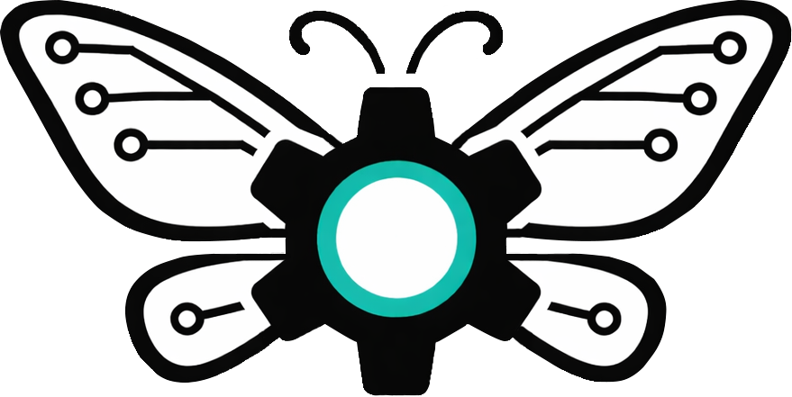

Autronis Task, Logic & Automation System — april 2026
ATLAS is het operationeel systeem van Autronis. Het verbindt alles: het dashboard, AI agents, skills, hooks, automatisering en projectbeheer in één systeem. Je bedient het vanuit Claude Code met slash commands.
/command/command die je typt in Claude Code. Bijvoorbeeld /ship om te deployen, /ping Klant voor een klantoverzicht, of /autro om het hele agent team aan te sturen. Skills zitten in ~/.claude/skills/./prime of /go. Werk met skills en agents. Bij hoge context: /handoff schrijft alles op. Nieuwe chat: /pickup pakt het op. Klaar: /end sluit alles netjes af./prime of /brief — context laden, dagbriefing/build — taken uit dashboard oppakken en uitvoeren/autro — groot project? Agent team stuurt alles aan/ping /mail /invoice — klantwerk afhandelen/ship — klaarmaken en live zetten/end of /handoff — sessie afsluiten, alles gesynct